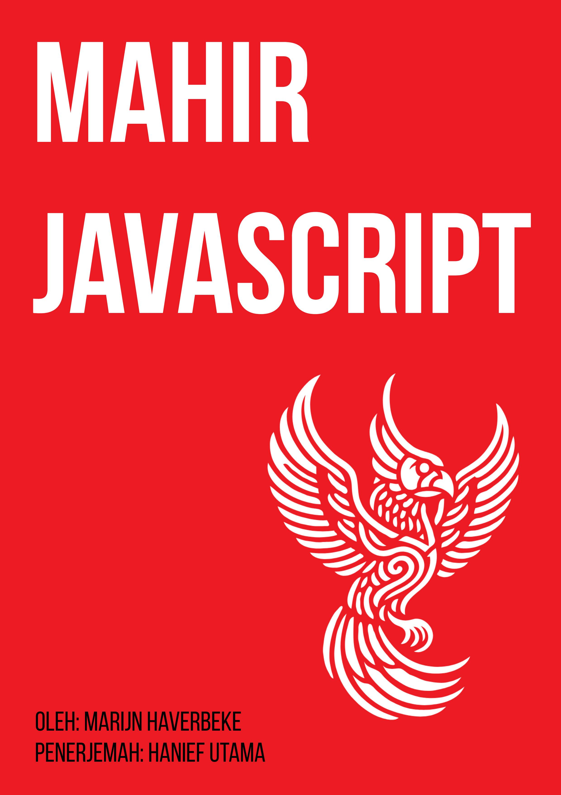

Mahir JavaScriptEdisi pertama (2025)
Ini adalah buku mengenai JavaScript, pemrograman, dan keajaiban digital. Anda bisa membacanya secara daring di sini.
Ditulis oleh Marijn Haverbeke. Diterjemahkan oleh Hanief Utama.
Berlisensi Creative Commons attribution-noncommercial license. Seluruh kode dalam buku berlisensi MIT license.
Ilustrasi oleh beberapa seniman: sampul oleh Hanief Utama. Ilustrasi bab oleh Madalina Tantareanu. Ilustrasi piksel di bab 7 dan 16 oleh Antonio Perdomo Pastor. Diagram ekspresi reguler di bab 9 dibuat menggunakan regexper.com oleh Jeff Avallone. Konsep permainan di bab 16 oleh Thomas Palef.
Daftar Isi
- Pendahuluan
-
(Bagian 1: Bahasa)
Nilai, tipe, dan operator - Struktur Program
- Fungsi
- Struktur Data: Objek dan Array
- Fungsi orde tinggi
- Kehidupan rahasia Objek
- Proyek: Sebuah robot
- Kekutu dan Galat
- Ekspresi Reguler
- Modul
- Pemrograman asinkron
- Proyek: Sebuah Bahasa Pemrograman
-
(Bagian 2: Peramban)
JavaScript dan peramban - DOM
- Menangani Events
- Proyek: Sebuah permainan
- Menggambar di Canvas
- HTTP dan Borang
- Proyek: Sebuah editor seni piksel
-
(Bagian 3: Node)
Node.js - Proyek: Situs berbagi kemampuan